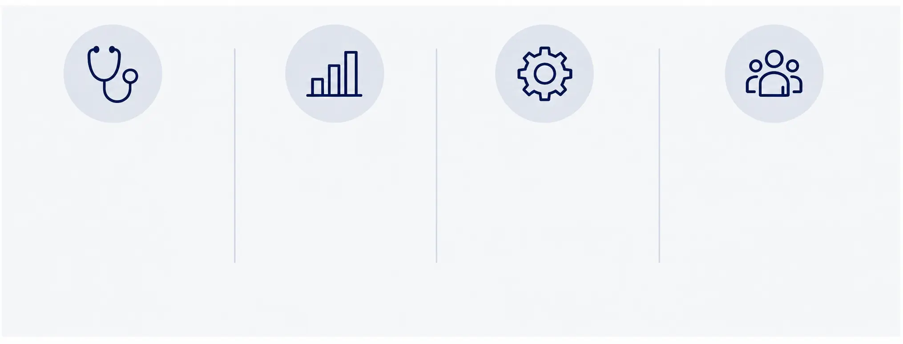

Navigating U.S. Healthcare
Innovation Alone
Doesn't Drive Adoption.
U.S. healthcare decision-makers evaluate more than the technology. They consider clinical value, economic value, operational fit and the confidence required to support adoption.

Clinical
Value
Improved patient
outcomes and
evidence-based impact
Economic
Value
Clear ROI and
sustainable
reimbursement
Operational
Fit
Seamless integration
into real-world
workflows
Executive
Trust
Confidence in partners
who understand
the U.S. market
We help exceptional healthcare companies
turn innovation into real-world impact in the U.S.